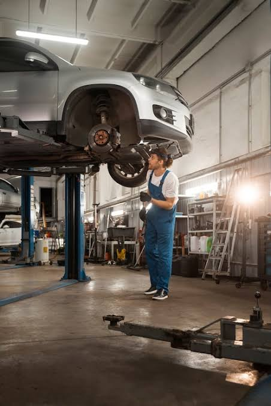
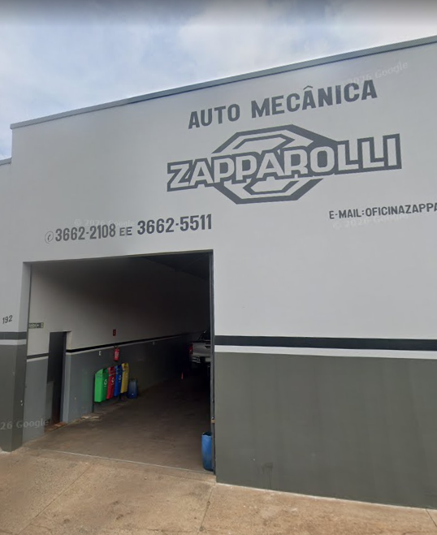
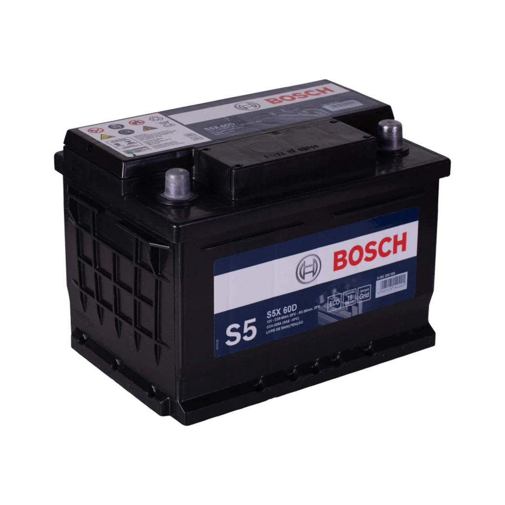
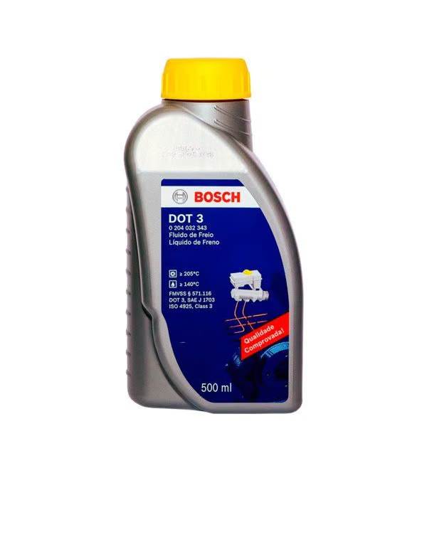
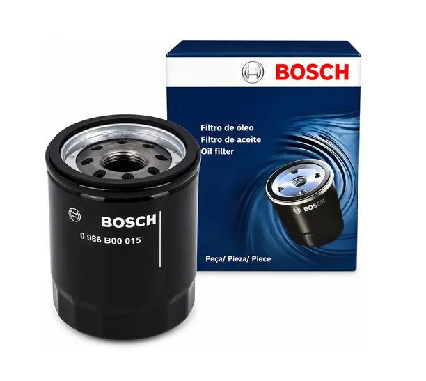

Seg / Sex - 07:00 às 18:00
+55 14 99615-7420R. Aurora Pinheiro Galízia, 192 - Vila Americana, Bariri, SP
Localizada na Vila Americana, em Bariri, a Auto Mecânica Zapparolli é referência no atendimento automotivo da região. Nosso compromisso é oferecer um serviço mecânico de alta qualidade aliado à praticidade do comércio de autopeças em um só lugar.
Atendemos veículos nacionais e importados com diagnósticos precisos e soluções eficientes, garantindo que você e sua família dirijam com total seguramça. Aqui, valorizamos a honestidade em cada orçamento e a agilidade na entrega, respeitando o seu tempo e o seu investimento.





Profissionais especializados e em constante atualização para cuidar do seu veículo com precisão e técnica apurada.
Rigoroso padrão de excelência em cada diagnóstico, reparo e manutenção, garantindo a máxima segurança para você.
Soluções eficientes e com excelente custo-benefício, focando no que realmente importa para o seu orçamento.
Compromisso e transparência que conquistam a confiança dos clientes, construindo uma história de credibilidade no mercado.
Processos otimizados e atendimento ágil para entregar o seu carro pronto no menor tempo possível, sem abrir mão da qualidade.
Utilização de componentes originais e de alta durabilidade, assegurando o perfeito funcionamento e a vida útil prolongada do veículo.